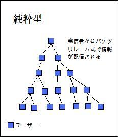
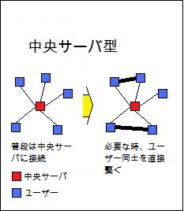

|
文中のこの色の文字の上にマウスを置くと単語の意味が表示されます
情報の発信Peer to Peer (P2P)について


P2PとはPeer to Peerの略称で、インターネットに接続したP2Pの利用者間で直接ファイルのやり取りをするというネットワークの仕組みである。仕組みとしては大きく分けて中央サーバ型と純粋型の２種類がある。 中央サーバ型は中央サーバがファイルの検索と通信相手の特定のみを行いファイルのやり取りは利用者間で行うという仕組みである。 純粋型は中央サーバのような物はなく利用者間でバケツリレー方式で情報を転送する仕組みである。 ファイル共有ソフトやIP電話などもP2Pを用いたものである。 最近では応用化が進み、P2Pは動画配信などにも使われるようになった。 P2Pはクライアントサーバ方式と比べ、サーバへの負荷が圧倒的に小さい、匿名性が高い、などのメリットがあるが、その匿名性の高さゆえに違法なデータのやり取りの監視が非常に困難という点がある。そのためP2Pを利用した違法なデータのやり取りが頻繁に行われているのが事実である。また、P2Pファイル共有ソフトの製作者が、著作権侵害行為を幇助した共犯の容疑を問われ逮捕されるといったことも起きている。2010年1月1日に「改正著作権法」が施行されたことによって政府が監視ソフトを導入する、違法なデータのやり取りをしているプロバイダをネットワークから強制切断させる、などの対策が取られているがあまり効果は見込まれていないようである。 上で述べたようにP2Pには意図しないファイルのやり取りが行われる可能性がある。そのため、コンピュータウイルスに感染する可能性が非常に高い。P2Pを介して感染するコンピュータウイルスの多くは、感染したユーザの極秘情報やプライベートデータなどを盗み出すといったものがほとんどで、感染が広まったことで大きな社会問題となったこともある。対策としては管理者の検閲を経てからの公開する、ウイルスチェックプログラムの利用徹底、利用者にアップロードファイルの確認を求める、などがあげられる。P2Pを利用する上でウイルス対策は必須といえるだろう。 同階層のテーマへ飛ぶ |


|
(c) 2010-2011 Team "情報化社会の光と闇" All rights reserved. Created by ez-HTML |